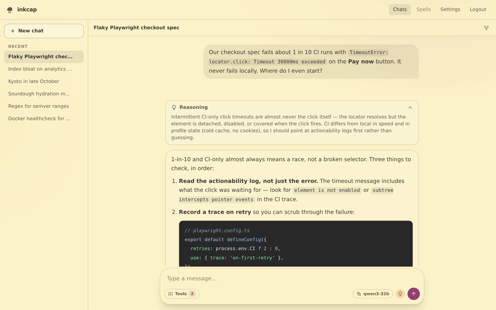
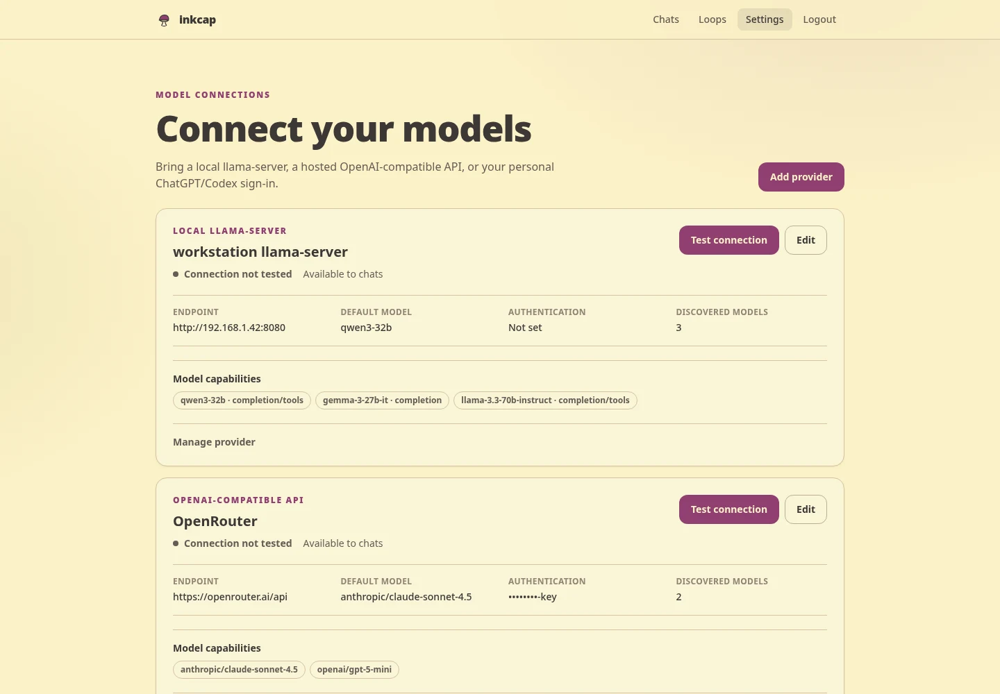
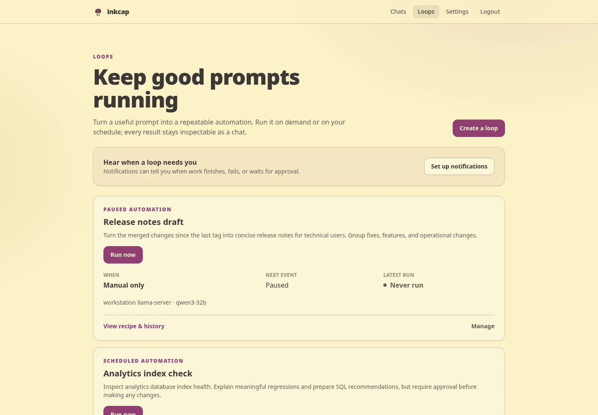

Chat
Use local or hosted models, connect MCP tools, and keep approval where a person should stay involved.
 inkcap
inkcap
self-hosted AI chat, scheduled loops, and push notifications

What it does
Use local or hosted models, connect MCP tools, and keep approval where a person should stay involved.
Save a prompt, model, and tools as a loop. Run it manually or put it on a schedule.
Hear when a loop finishes, fails, or waits for approval.


Small on purpose
The live conversation adds one small vanilla JS file. The rest is server-rendered HTML and ordinary forms.
Bring PostgreSQL and a model
The setup guide covers Docker, Bun, local-model networking, provider credentials, and environment options.
Open the setup guide